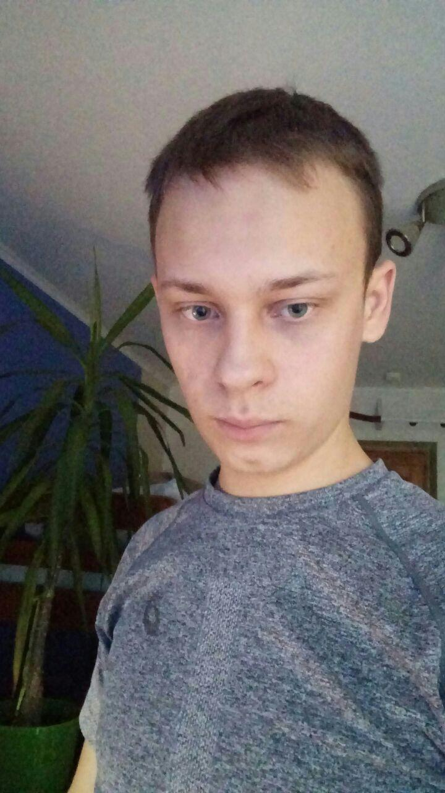

Vyacheslav Turok
Contacts:
Skype: evilihem Email: veserhin@gmail.com
Summary:
I would like to get a job in a company that has directed my efforts in the right direction for the development of my skills. Have a great desire to get new knowledge in order to become a professional in my field and move up the career path.
Skills: Making test cases, writing bug reports, making checklists, basic knowledge of MySql, JavaScript, Css, Git.
Example of latestest code:
weakPoint(matrix){
var rs = [], cs = [];
for (let r = 0; r < matrix.length; r++) {
for (let c = 0; c < matrix.length; c++) {
rs[r] = (rs[r] || 0) + matrix[r][c];
cs[c] = (cs[c] || 0) + matrix[r][c];
}
}
return [rs.indexOf(Math.min.apply(Math, rs)),
cs.indexOf(Math.min.apply(Math, cs))];
}
Passed the free part of the javarush courses. Performed tasks on the site codewars on JavaScript. Performed tasks on Rollingscopes.com Higher education. BSUIR, Faculty of Radio Electronics 2013-2017. Software functional testing courses 11.12.2018-13.01-2019 Studied English 2 courses at the university and in English courses organized by the university.